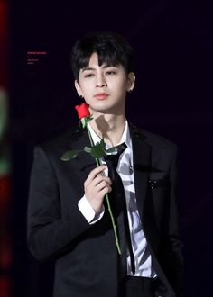
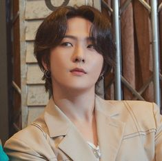
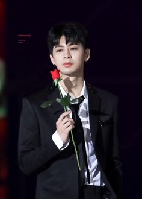
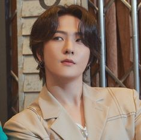

Big Bang
Big Bang (Korean: 빅뱅; stylized in all caps) is a South Korean boy band formed by YG Entertainment. The group consists of four members: G-Dragon, T.O.P, Taeyang, and Daesung. Originally a five-piece band, Seungri retired from the entertainment industry in March 2019. Dubbed the "Kings of K-pop", they helped spread the Korean Wave internationally and are considered one of the most influential acts in K-pop. They are known for their trendsetting musical experimentation, self-production, and stage presence.
BLack - Pink
Blackpink (Korean: 블랙핑크; RR: Beullaekpingkeu, commonly stylized as BLACKPINK or BLɅϽKPIИK) is a South Korean girl group formed by YG Entertainment, consisting of members Jisoo, Jennie, Rosé, and Lisa. The group debuted in August 2016 with their single album Square One, which featured "Whistle" and "Boombayah", their first number-one entries on South Korea's Gaon Digital Chart and the US Billboard World Digital Song Sales chart, respectively.
iKON
iKon (Korean: 아이콘), stylized as iKON, is a South Korean boy band formed in 2015 by YG Entertainment, consisting of six members: Jay, Song, Bobby, DK, Ju-ne and Chan. Originally a seven-piece band, leader B.I departed from the group in June 2019.

 


